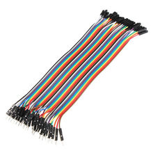

Провода Dupont Папа-мама, разноцветные, 30 см (40 шт.)
ПроводаКатегория
Провода
Тип
соединительные провода Dupont (male-to-female)
Количество жил
40 шт.
Длина
30 см
Шаг контактов
2,54 мм
Цвета
разноцветные
Конструкция
лента из отдельных разделяемых проводников
Назначение
подключение модулей и датчиков без пайки
Совместимость
стандартные штыревые разъёмы 0.1″ (2,54 мм)
Толщина провода
28 AWG
Упаковка
1 набор
Кратко
Это набор разноцветных соединительных проводов Dupont «папа-мама» длиной 30 см, 40 жил в ленте. Используется для быстрого подключения модулей, датчиков и плат к breadboard или к штыревым разъёмам без пайки.
Описание
Это типовой набор jumper wires формата male-to-female, где один конец — штыревой, а второй — гнездовой. Кабель выполнен в виде 40-ка проводной разноцветной ленты, которую можно разделять на отдельные проводники по мере необходимости. Длина 30 см подходит для макетных соединений внутри корпуса и на столе при отладке. Шаг контактов у таких наборов обычно 2,54 мм, что соответствует стандартным pin-header и breadboard-разъёмам. Такие провода применяются в Arduino, ESP, Raspberry Pi и других прототипных проектах.
Документация
Техническая страница 40pin Jumper Wire / Dupont Kabel Male to Female, 30cmDigiKey: BusBoard ZipWire male-to-female 30 cm, 40 жилDigiKey: справочник по наборам jumper wires (конфигурации и длины)
id hw-2026-099